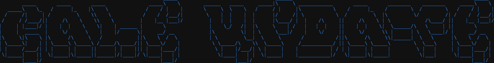
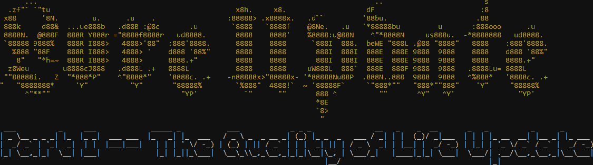
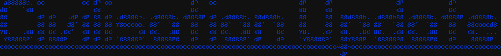
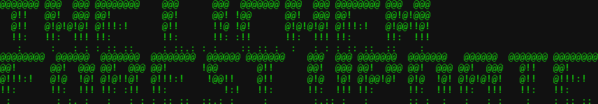
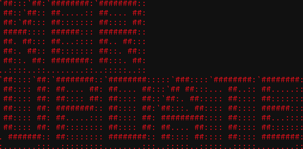

VIEW ALL VERSIONS DOWNLOAD THE LATEST VERSION
Mudjina Vila Roguelike is a First Person Shooter (aj videcemo) Open Source game made in the beautiful and painful language of C. It was made as a parody of a number guessing game. It is the best roguelike game you will ever play (no legal responsibility). It is less of a game and more of an excercise in programming. That being said it did spawn an entire Universe and Lore of it's own. As a game or experience it focuses on exploration and being just plain stupid.
VERSION HISTORY:

13/10/23: v1.1patch1: Dvotacke u changelogu posle Cale Update i Lore Update Part I -- Quality of Life Update uklonjene. Svi updatei sada imaju logo.
Igrica sada ima meni uputstva za lakse ucenje mehanika.
Igrica sada moze prikazivati vise boja u konzoli.
U snovima, ne nastavljaju se kada igrac pritisne Enter vec automatski posle dve sekunde. Snovi sada prikazuju 13 boja umesto 6.
Uklonjeni brojevi za debugovanje prilikom generisanja sveta.
Masnokosi sada dodaje 10000 kugli na trenutnu kolicinu, ne stavlja kolicinu da je jednaka 10000. Njegov napad puskom sada ostavlja bilijarsku loptu na podu u sobi u kojoj je igrac. Vise nece napadati kad je mrtav.
Dodat Caletov monolog pri gubljenju GTA Trka.
Trader sada ima portret. Portret Cuvarkugle se sada pravilno prikazuje na ekranu.
Svici sada konzumiraju vinovu lozu pri upotrebi.
Komp soba se sada cuje 25 soba daleko.
Promenjen update roadmap.
22/02/23 - 12/10/23: v1.1: Cale Update
Dodat Cale. Dodata soba sa kompom. Dodati kreveti i nocni stolovi. Dodat bilijar.
Dodati portreti nekih zivih bica i objekata
Niz cuvarkuglaAngerLevel uklonjen -- njegova funkcija je sada integrisana u niz cuvarkugla. Kada cuvarkugla dostigne angerLevel od 6 ili vise (default 1), oduzece health igracu jos jednom, u istom maniru kao i prvi put.
Popravljen Gods Protection. UI sa prodavcem je sada na srpskom. Pocetno vreme grozdja se sada pravilno generise. Sejvovi iz starijih verzija se sada azuriraju. Verzija igrice na glavnom meniju ce se od sad povecavati svakog updatea (trenutno v1.1).
Dok se generise svet, njegov progres se prikazuje i azurira. Help meni sada izgleda lepse.

29/10/22 - 22/02/23: v1.0: Lore Update Part I -- Quality of Life Update
Dodata biblioteka i police u njoj. Dodato znanje.
Likovi sada imaju ime. Dodata ogledala!
Dodate mape.
Dodat prodavac i magacini. Itemi su sada cesci.
Igrica sada moze da se sejva i louda. Igrica se sada arhivira posle svake verzije.
Ovo je tek prvi deo updatea.

20/10/22 - 22/10/22: Civilisation Update
Dodate kugle za bilijar. Dodati stolovi za bilijar, cuvarkugle, Zeljko Mitrovic.
Dodati itemi: Kugla za bilijar, Konzerva, Armorpierce Gun, Bozija zastita.
Promenjen redosled itema i namestaja (Funkcije za namestaj sada pocinju sa -1, a funkcije za iteme pocinju sa -2). Ovo je uradjeno zbog olaksavanja koriscenja i implementiranja buducih funkcija.

19/10/22: The Lichen Forest Update
Dodati itemi: Mudjompas, Keradar, Protivotrov, Svitac
Dodata vinova loza, sume vinove loze, grozdje, macka.
Igrica sada broji poteze.

18/10/22: Ker Update
Dodat pas i mirisi.
18/10/22: Prva Verzija
Prva verzija.
HAPPY ADVENTURING!